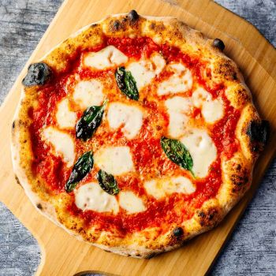

Home
Margherita Pizza Recipe

Description
Margherita Pizza is a classic Italian pizza known for its simplicity and fresh flavors. It
features a thin, crisp crust topped with a vibrant tomato sauce, slices of fresh mozzarella cheese, and fresh
basil leaves. A drizzle of olive oil adds richness, while baking in a hot oven gives the pizza a perfectly
golden crust with slightly bubbling cheese.
The beauty of Margherita Pizza lies in its balance — the acidity of the tomato sauce complements the creamy
mozzarella, while the fresh basil adds an aromatic, refreshing note. This pizza is perfect for a quick weeknight
meal or a special weekend treat and showcases the elegance of minimal, high-quality ingredients.
Ingredients
- 1 pizza dough (store-bought or homemade, enough for 1 medium pizza)
- 1/2 cup tomato sauce
- 6–8 oz fresh mozzarella cheese, sliced
- Fresh basil leaves, a handful
- 1–2 tablespoons olive oil
- Salt, to taste
Steps
- Preheat the oven to 475°F (245°C). If using a pizza stone, place it in the oven to heat.
- Roll out the pizza dough on a lightly floured surface to your desired thickness.
- Spread tomato sauce evenly over the dough, leaving a small border for the crust.
- Arrange slices of fresh mozzarella on top of the sauce.
- Add fresh basil leaves and drizzle lightly with olive oil. Sprinkle a pinch of salt if desired.
- Transfer the pizza to the oven (or onto a preheated pizza stone) and bake for 10–15 minutes, until the crust
is golden and the cheese is melted and bubbly.
- Remove from the oven, let it cool for a couple of minutes, slice, and serve immediately.